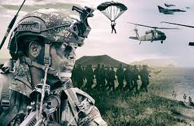
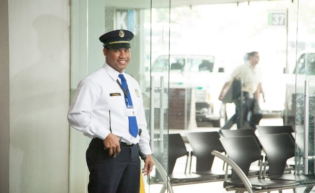

Panadería y Servicio al Cliente
Laboré como Panadero y en Servicio al Cliente durante un año en la Panadería La Despensa en Copacabana en el 2017.

Foto
Ejército Nacional de Colombia
Fui Soldado Regular del Ejército Nacional de Colombia en la Cuarta Brigada desde el año 2018 hasta el 2020. Allí estuve prestando guardia, pertencecí a la Banda de Guerra y estuve en el módulo principal del cantón registrado y atendiendo al personal que llegaba.
Foto

Guarda de Seguridad
Fui Guarda de Seguridad desde el 2020 hasta el 2021 en la entrada principal del Hospital Pablo Tobón Uribe, brindando mi apoyo a todo el que ingresaba.
Foto

Ayudante de Servicios
Desde el 2021 comencé como Ayudante Asistencial de Enfermería en el Hospital Pablo Tobón Uribe hasta la actualidad, donde gracias a Dios me siento muy gratificado con la forma en la que puedo ayudar a los pacientes y a sus familias en sus momentos más difíciles.